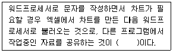

PC정비사-2급 (2017-07-16 기출문제)
1과목: PC유지보수
1. 운영체제와 지원 가능한 파일 시스템의 연결 중 잘못된 것은?
- LINUX 9.0 - EXT2/EXT3
- Windows 98 - FAT32/HPFS
- Windows XP - FAT32/NTFS
- Windows 7 - exFAT/NTFS
(정답률: 88%)

2. Linux에서 모든 파일의 목록과 자세한 사항을 내림차순으로 정렬하기 위한 명령은?
- ls -alc
- ls -alk
- ls -alr
- ls -alu
(정답률: 84%)
3. ROM임에도 불구하고 입력된 내용을 자외선으로 삭제할 수 있고, 새로운 내용을 입력할 수 있는 ROM은?
- PROM
- Mask ROM
- EPROM
- EEPROM
(정답률: 88%)
4. 시스템 처리 방식에 대한 설명 중 올바른 것은?
- 실시간 처리 시스템(Real Time Processing System) : 데이터가 발생하는 즉시 컴퓨터에서 처리가 이루어지는 시스템으로 은행의 온라인이나 각종 예약업무에 대표적으로 사용된다.
- 일괄 처리 방식(Batch Processing System) : CPU가 한 사용자로부터 다른 사용자로 빠르게 교환시켜 주는 시스템으로 많은 사용자가 동시에 사용할 때도 실제는 한 개의 컴퓨터를 사용하고 있지만 각 사용자는 독립된 컴퓨터로 작업하는 느낌을 가질 수 있다.
- 시분할 시스템(Time Sharing System) : 여러 개의 작업을 하나로 묶어 자동적으로 한 작업에서 다른 작업으로 연속될 수 있도록 한 처리 방식이다.
- 시분할 시스템(Time Sharing System)은 주로 항공표, 기차표 예매 등에 사용된다.
(정답률: 90%)
5. Windows 7 Professional의 관리 도구에 대한 설명으로 잘못된 것은?
- iSCSI 초기자 - 통합된 단일 데스크톱 도구를 사용하여 로컬 또는 원격 컴퓨터를 관리한다.
- 구성 요소 서비스 - COM(구성 요소 개체 모델) 구성 요소를 구성하고 관리한다.
- 성능 모니터 - CPU(중앙 처리 장치), 메모리, 하드디스크 및 네트워크 성능에 대한 고급 시스템 정보를 본다.
- 작업 스케줄러 - 프로그램 또는 다른 작업이 자동으로 실행되도록 예약한다.
(정답률: 82%)
6. Windows에서 웹서버와 HTTP 프로토콜을 통신하여 사용자가 요구한 홈페이지에 접근하여 웹 문서를 사용자에게 보여주는 프로그램은?
- 웹 브라우저
- 이더넷 통신
- FTP
- TELNET
(정답률: 91%)
7. 시스템의 각 프로세스들이 서로 필요로 하는 자원을 순환적으로 요청하고 있어 어느 프로세스도 진행을 할 수 없는 상태를 지칭하는 용어는?
- 시간분할(Time-Sharing)
- 분산처리(Distributed Processing)
- 교착상태(Deadlock)
- 아사상태(Starvation)
(정답률: 91%)
8. Windows 7 Professional에서 현재 실행 중인 응용프로그램이나 열려 있는 폴더를 닫으려고 할 때 사용되는 단축키는?
- Alt ＋ X
- Ctrl ＋X
- Alt ＋ F4
- Ctrl ＋ F4
(정답률: 94%)
9. 컴퓨터의 자원을 통합적으로 관리하고 제어하는 시스템소프트웨어로서 컴퓨터에 대한 전문 지식을 갖고 있지 않은 초보자도 쉽고 편리하게 컴퓨터를 사용할 수 있도록 도와주는 것은?
- 문서 처리 프로그램
- 사용자 개발 프로그램
- 운영체제
- 패키지 프로그램
(정답률: 91%)
10. 운영체제에서 발생하는 Interrupt에 대한 설명 중 잘못된 것은?
- 어떤 프로세스에게 주어진 시간 할당량이 종료했을 경우
- 어떤 하드웨어에 오류가 발생한 경우
- 어떤 프로세스가 입출력을 위한 시스템 호출을 한 경우
- 어떤 프로세스가 시스템 내부의 다른 프로세스로부터 메시지를 받는 경우
(정답률: 79%)
11. Outlook Express를 이용하여 수신 메일을 받고자 할 때 알아야 하는 서버 주소는?
- SMTP 서버 주소
- POP3 서버 주소
- SNMP 서버 주소
- Web 서버 주소
(정답률: 78%)
12. Windows 환경에서 어느 응용 프로그램을 사용하지 않아 이를 삭제하려고 할 때 사용하는 것은?
- [시작] - [제어판] - [장치 및 프린터 보기]
- [시작] - [제어판] - [프로그램 제거]
- [시작] - [모든 프로그램] - [보조프로그램] - [캡쳐 도구]
- [시작] - [제어판] - [사용자 계정 제거]
(정답률: 95%)
13. System Configuration Editor로 편집할 수 없는 시스템 파일은?
- win.ini
- desktop.ini
- config.sys
- autoexec.bat
(정답률: 86%)
14. Windows를 시작하는 데 필요한 하드웨어 관련 파일이 포함된 디스크 볼륨은?
- 시스템 파티션
- 미분할 파티션
- 듀얼 부팅 파티션
- 백업 부팅 파티션
(정답률: 89%)
15. 다음 ( )에 적당한 용어는?

- OLE
- DLL
- INI
- PCX
(정답률: 88%)
2과목: PC운영체제
16. PC의 전원 공급 장치에서 변환되어 출력되는 전압으로 올바른 것은?
- ±3[V], ±9[V]
- ±5[V], ±12[V]
- ±5[V], ±9[V]
- ±6[V], ±15[V]
(정답률: 90%)
17. 파워서플라이의 출력 DC 전압의 종류로 잘못된 것은?
- +3.3V
- +5V
- +10V
- +12V
(정답률: 84%)
18. 시스템의 메인 메모리로 사용할 수 없는 메모리는?
- DDR2-SDRAM
- RDRAM
- SRAM
- SDRAM
(정답률: 81%)
19. 15핀(3열) D-Sub 커넥터의 핀 번호와 사용 용도 연결이 잘못된 것은?
- 1, 2, 3 - R, G, B 선
- 6, 7, 8 - 접지
- 4, 5, 9 - 핀 없음
- 13, 14 - 수평, 수직 동기
(정답률: 85%)
20. 다음 중 그래픽코어를 내장하지 않은 칩셋은?
- 인텔 845G
- 인텔 815
- 인텔 810
- 인텔 845
(정답률: 78%)
21. 하드디스크에 대한 설명 중 틀린 것은?
- FAT 파일 시스템은 포맷없이 커맨드 창에서 NTFS로 변경할 수 있다.
- NTFS 파일 시스템은 포맷없이 커맨드 창에서 FAT로 변경할 수 있다.
- 파티션 설정시 주 파티션은 최대 4개까지 만들 수 있다.
- 확장 파티션에 만들어진 논리 드라이브는 무제한으로 만들 수 있다.
(정답률: 79%)
22. Random Access 방식으로 데이터를 읽을 수 없는 장치는?
- CD-ROM
- Hard Disk
- Digital Audio Tape
- Flash Memory
(정답률: 84%)
23. DVD에 대한 설명으로 잘못된 것은?
- SATA 방식의 인터페이스만을 사용한다.
- 고화질과 고음질의 영상을 기록할 수 있다.
- 싱글 레이어 단면의 경우 약 4.7GB의 대용량 데이터를 저장할 수 있다.
- MPEG-2 기술을 접목시켜 비디오 데이터까지 저장이 가능하다.
(정답률: 82%)
24. 잉크리본을 거쳐 활자나 도트와이어를 용지위에 부딪히게 하는 방식의 충격식 프린터는?
- 잉크젯 프린터
- 도트 프린터
- 감열식 프린터
- 레이저 프린터
(정답률: 84%)
25. DDR2 SDRAM에 대한 설명으로 잘못된 것은?
- DDR2 SDRAM은 240핀 슬롯을 지원한다.
- 노트북용 DDR2 SDRAM은 200핀 슬롯을 지원한다.
- DDR2 SDRAM은 DDR3 SDRAM과 핀 수는 같으나 핀의 배열이 달라 호환이 되지 않는다.
- DDR2 SDRAM은 DDR SDRAM과 규격이 같기 때문에 같은 슬롯에 장착하여 사용한다.
(정답률: 78%)
26. 네트워크 인터페이스 카드는 OSI 참조모델에서 몇 계층에 해당하는가?
- 1 계층
- 2 계층
- 3 계층
- 4 계층
(정답률: 76%)
27. FAT32 파일 시스템에서 하나의 파일이 가질 수 있는 최대 용량과 최소 용량이 올바르게 연결된 것은?
- 4GB - 1Byte
- 8GB - 4Byte
- 16GB - 8Byte
- 32GB - 16Byte
(정답률: 82%)
28. CRT의 색깔을 구성하는 R.G.B의 점과 점사이의 거리를 말하는 것으로, CRT의 등급을 결정하는 주요한 요인이 되는 것은?
- Dot Pitch
- Convergence
- Magnet
- 전자총
(정답률: 91%)
29. 주기억장치의 일반적인 특성이 아닌 것은?
- 반도체 소자를 주로 사용한다.
- 비휘발성이다.
- 보조기억장치에 비해 속도가 빠르다.
- SDRAM, DDR-SDRAM, RDRAM등이 사용된다.
(정답률: 86%)
30. 컴퓨터 시스템 운영 시 전압이 일정하게 유지되도록 조절해주는 장치는?
- UPS
- AVR
- FEP
- SMPS
(정답률: 83%)
3과목: PC주변기기
31. ODD - HDD 순으로 부팅되는 PC를 HDD - ODD순서로 변경하기 위해 바이오스에서 설정해야 하는 메뉴는?
- Disk Swap
- POWER ON Function
- I/O Device Configuration
- Boot Sequence
(정답률: 87%)
32. 웜(Worm)과 바이러스에 대한 설명 중 잘못된 것은?
- 바이러스는 감염된 파일을 치료해서 되살리지만 웜은 그 자체를 찾아 제거해야 한다.
- 바이러스는 대개 한 시스템에만 피해를 주지만 웜은 네트워크 자체에 해를 끼친다.
- 바이러스는 자신을 복제하는 것 이외에 다른 문제는 일으키지 않으므로 발견했을 때 그냥 삭제하면 문제를 해결할 수 있다.
- 개인 정보를 몰래 가로채는 종류의 웜은 증상을 자각하기 어렵다.
(정답률: 89%)
33. Standard CMOS Setup에서 Halt On에 대한 설명으로 올바른 것은?
- All, But Keyboard - 키보드 오류에 대해서만 POST를 멈추지 않는다.
- All Errors - 어떤 에러가 발생해도 POST를 계속 진행한다.
- No Errors - 바이오스가 비치명적인 에러 검출 시 POST를 중지하고 알려준다.
- No, But Keyboard - 키보드 오류에 대해서만 POST를 멈추지 않는다.
(정답률: 75%)
34. 컴퓨터에 두 개의 E-IDE 하드디스크를 장착한 후에 부팅하였으나 하드디스크가 인식되지 않는다. BIOS SETUP에서 "IDE HDD Auto Detection" 기능을 이용해 인식을 시도해도 마찬가지다. 다음 중 원인으로 잘못된 것은?
- 하드디스크의 데이터 케이블이 연결되지 않았다.
- 하드디스크의 전원 케이블이 연결되지 않았다.
- 하드디스크의 점퍼(Master/Slave)가 서로 충돌한다.
- 하드디스크의 파티션이 설정되지 않았다.
(정답률: 72%)
35. Windows 최적화에 대한 설명으로 잘못된 것은?
- 불필요한 시작프로그램을 정리하면 부팅시간이 빨라진다.
- 가상 메모리를 최적의 설정 값으로 설정하면 성능이 향상된다.
- 하드디스크의 캐시를 증가시키면 시스템의 속도를 향상시킬 수 있다.
- 시스템 가동 시 CD-ROM 드라이브 검색을 생략하면 부팅속도가 느려진다.
(정답률: 86%)
36. Windows의 멀티부팅 정보를 담고 있는 boot.ini 파일에 대한 설명 중 잘못된 것은?
- boot.ini 파일은 [boot loader]와 [operating systems] 두 부분으로 구성되어 있다.
- /noguiboot 옵션을 사용하면 Windows가 시작될 때 Windows 로고 화면을 보여주지 않는다.
- boot.ini 파일을 편집해 멀티부팅 메뉴를 표시하는 시간을 줄일 수 있다.
- /fastdetect 옵션을 사용하면 부팅 시 운영체제를 선택할 수 없다.
(정답률: 76%)
37. Plug and Play 기능에 대한 설명으로 잘못된 것은?
- PnP를 지원하지 않는 장치의 리소스는 Windows의 장치관리자에서 확인할 수 있으나, PnP를 지원하는 장치의 리소스는 확인할 수가 없다.
- PnP 기능을 사용하기 위해서는 하드웨어와 소프트웨어가 모두 PnP 기능을 지원해야 한다.
- 주변기기를 연결할 때 사용자가 직접 환경 설정을 하지 않아도 된다.
- '장치관리자'에서 '알 수 없는 장치'로 나타나는 것은 PnP에 의해 인식된 장치가 올바른 드라이버를 사용할 수 없는 경우이다.
(정답률: 75%)
38. PC에서 사용하는 BIOS의 종류가 아닌 것은?
- AWARD
- PHOENIX
- AMI
- HP-UX
(정답률: 84%)
39. 컴퓨터를 조립한 후 시스템의 전원을 눌렀으나, PC의 본체에서 아무런 반응이 없을 경우 확인해야할 부분으로 잘못된 것은?
- 메인보드의 이상 유무를 확인한다.
- 전원 공급 장치의 이상 유무를 확인한다.
- CPU의 이상 유무를 확인한다.
- 그래픽카드의 이상 유무를 확인한다.
(정답률: 73%)
40. 과도한 CPU 오버 클러킹으로 인하여 발생되는 문제가 아닌 것은?
- 시스템이 자주 다운된다.
- CPU에 과도한 발열이 생긴다.
- CPU에 설치된 팬이 멈춘다.
- CPU의 수명을 단축시킨다.
(정답률: 92%)
41. PC 조립 시 연결하지 않으면 시스템이 멈추는 증상 등 치명적인 문제를 발생시킬 수 있는 것은?
- HDD LED 커넥터
- Power LED 커넥터
- CPU 쿨러 커넥터
- CD-ROM 사운드 케이블
(정답률: 84%)
42. 컴퓨터 부팅 중에 'BIOS Check Sum Error' 메시지가 출력되었을 때 이를 해결하는 방법으로 올바른 것은?
- 메인보드의 배터리를 교체한다.
- 키보드 커넥터를 확인한다.
- 메인 메모리를 교체한다.
- CPU를 교체한다.
(정답률: 89%)
43. PnP장치가 관리하지 않는 것은?
- DMA 채널
- TCP/IP
- IRQ
- 입출력 Address
(정답률: 84%)
44. 하드디스크가 Active 상태로 설정되지 않았을 경우, 나타나는 메시지는?
- Device overflow
- Hard disk diagnosis fail
- No ROM Basic system halted
- Error initializing hard drive controller
(정답률: 80%)
45. 부팅 중에 나타날 수 있는 에러 메시지의 종류가 아닌 것은?
- CMOS Checksum Error
- Keyboard Error
- HDD Controller Error
- System Software Abnormal
(정답률: 76%)
4과목: PC네트워크
46. 목표 서버와 공격시간대를 정해서 집중적으로 공격함으로써 결국 웹서비스를 제공하지 못할 정도로 시스템이 느려지거나 다운되도록 공격하는 방법은?
- DoS
- IDS
- Hacking
- VPN
(정답률: 89%)
47. 다음 중 라우터에 관한 설명으로 가장 올바른 것은?
- 서로 다른 프로토콜로 운영하는 통신망에서 정보를 전송하기 위해 경로를 설정하는 역할을 제공하는 통신 장비이다.
- TCP/IP 프로토콜을 사용하여 통신을 할 경우 송신자와 수신자를 구별하기 위한 주소이다.
- 근거리에 놓여 있는 컴퓨터와 이동단말기·가전제품 등을 무선으로 연결하여 쌍방향으로 실시간 통신을 가능하게 해주는 규격이다.
- 매체의 길이가 길어질수록 자료의 신호가 감소되는데 이를 재생시키는 장비이다.
(정답률: 69%)
48. 인터넷에서 외부로부터 불법 침입을 막고 접근 통제를 주된 목적으로 설치되는 장비는?
- Firewall
- Proxy Server
- File Server
- Gateway
(정답률: 82%)
49. Windows에서 TCP/IP를 구성하기 위해 지정하는 항목으로 잘못된 것은?
- IPX/SPX 주소
- IP 주소
- DNS 서버 주소
- Gateway 주소
(정답률: 87%)
50. 인터넷 프로토콜인 TCP/IP에 대응하는 ISO의 표준은?
- Telnet
- OSI 7 Layers
- IP
- TCP
(정답률: 86%)